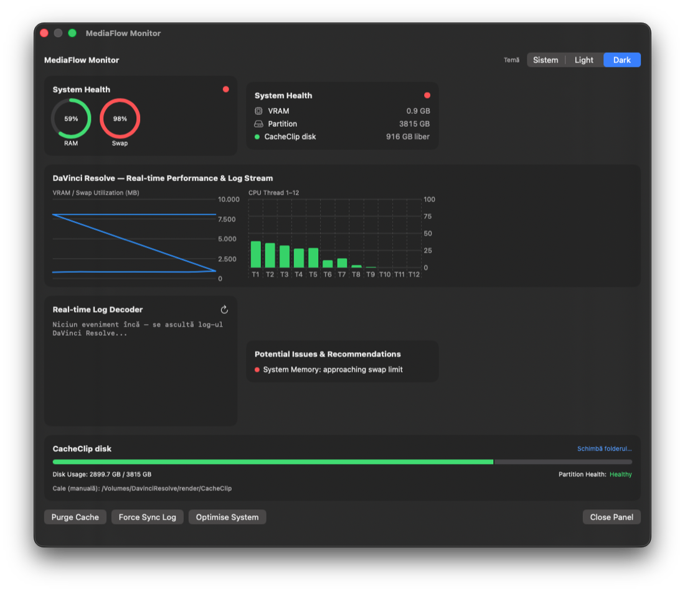
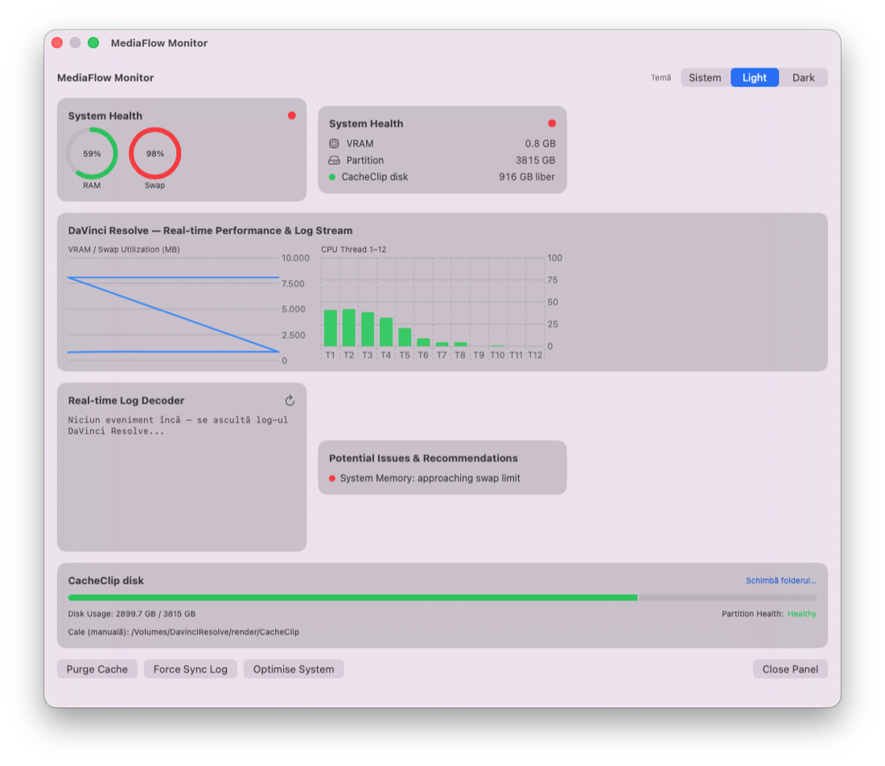

MediaFlow Monitor
Dashboard Pro de monitorizare & diagnosticare DaVinci Resolve, în timp real.
Grafice live VRAM & CPU
Utilizare VRAM/Swap în timp și per-thread CPU, actualizate live, direct în panou.
Real-time Log Decoder
Consolă colorată pentru evenimentele DaVinci Resolve — GPU Memory Full, Render Cache invalid, dropped frames, Fusion lent.
Render Cache pe discuri externe
Detectare + selecție manuală a folderului CacheClip, inclusiv pe volume Thunderbolt/RAID externe.
Overlay pe scurtătură
Cmd+Shift+M pe macOS, Ctrl+Shift+M pe Windows — fereastră redimensionabilă, temă Dark/Light/System.


Download MediaFlow Monitor (macOS)
Download MediaFlow Monitor (Windows)
Cum se instalează & se activează
- Dă dublu-click pe
MediaFlowMonitor.pkg— se deschide asistentul clasic de instalare Mac ("Install MediaFlow Monitor"), semnat + notarizat Apple, fără avertismente Gatekeeper. - Apasă Continue → Install — aplicația se instalează automat direct în
/Applications, fără să tragi nicio iconiță manual. - Apasă
Cmd+Shift+Mpentru a arăta/ascunde panoul Dashboard Pro.
- Dă dublu-click pe
MediaFlowMonitorSetup-x64.exe— apare wizard-ul "Install MediaFlow Monitor". - Instalator nesemnat (fără certificat Authenticode încă) — Windows arată "Windows protected your PC": apasă More info → Run anyway.
- Continue → Install — se instalează în
Program Files\GDC\MediaFlow Monitor, cu scurtături Desktop + Start Menu. - Apasă
Ctrl+Shift+Mpentru a arăta/ascunde panoul Dashboard Pro.
- Aplicația pornește automat cu 15 zile de probă gratuită, fără cont sau înregistrare, pe ambele platforme.
Aplicația include 15 zile gratuite, acces complet. Pentru activare pe viață, deschide meniul aplicației (bara de meniu pe Mac, system tray pe Windows) → copiază Machine ID → trimite-l pe WhatsApp pentru activare.
Activează licența (WhatsApp)Integrare ecosistem GDC
MediaFlow Monitor folosește aceeași infrastructură de licențiere ca toate aplicațiile GDC — chei Ed25519, activare prin Machine ID, verificare de revocare online (fail-open, funcționează și offline). Licența generată de Furnizorul GDC Plugin Manager e recunoscută instant de aplicație, fără pași suplimentari de configurare. Actualizările de versiune sunt verificate automat la lansare (pop-up + banner), cu link direct spre ultimul build de pe această pagină.